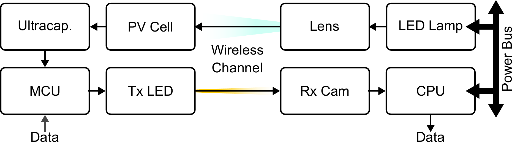
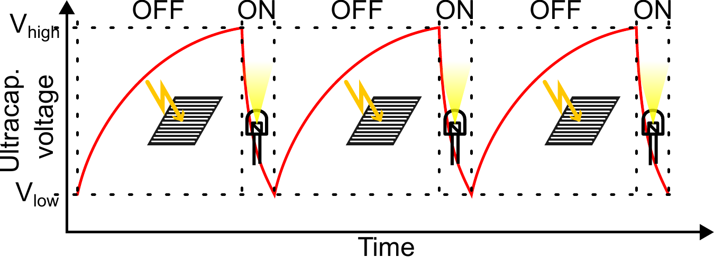
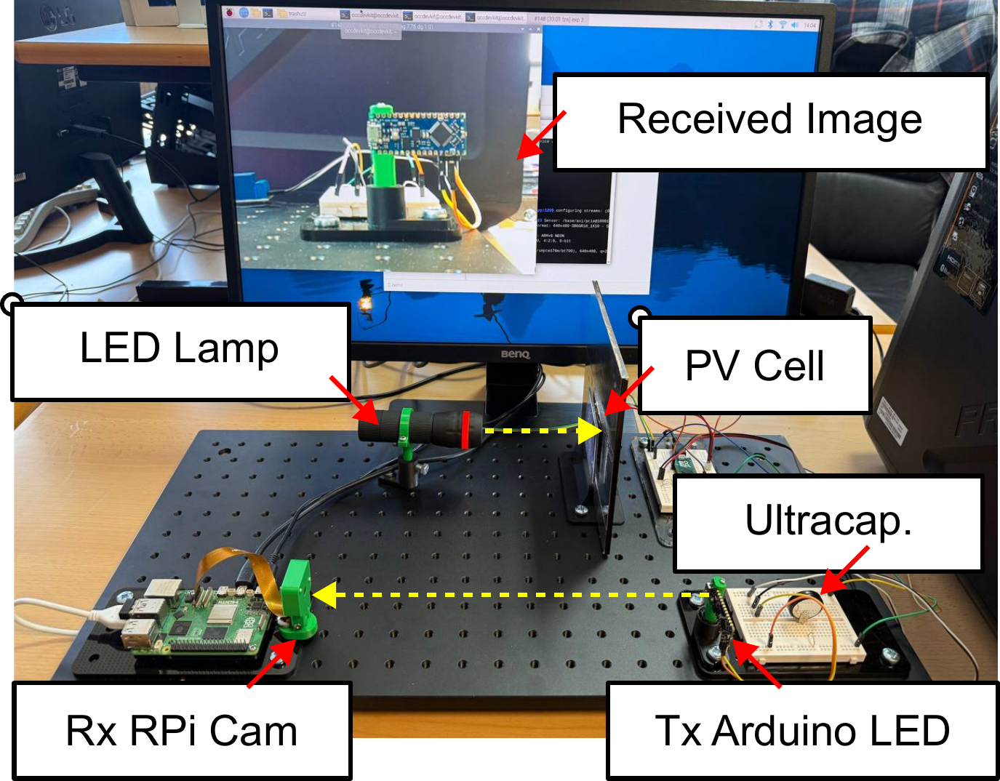
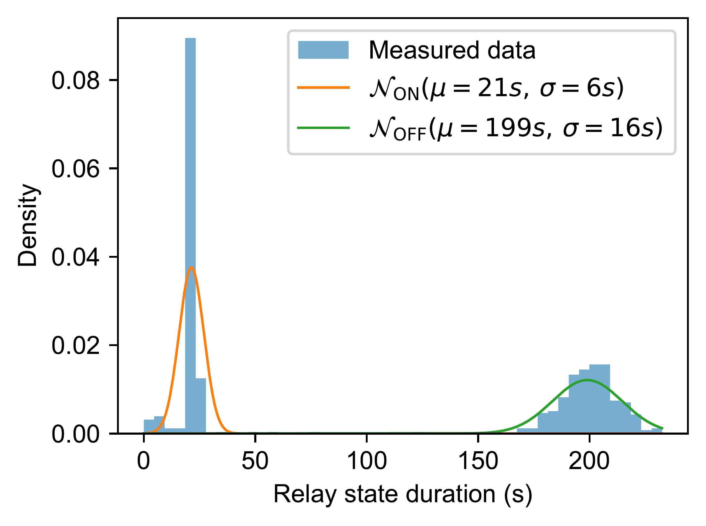

1The Problem
- Intra-satellite links are still mostly wired harnesses: added mass, poor modularity, and costly re-qualification (updated Test Procedures, Test Readiness Reviews) whenever a subsystem is moved.
- Optical Camera Communication (OCC) reuses ordinary LEDs as transmitters and cameras as receivers, yet transmitter energy is ignored: it is assumed permanently powered.
- A node that is wireless for both power and data remains unproven for spacecraft interiors.

2Current Solutions
- Wired RF & harness links: power-dependent, rigid topology, added mass.
- Photodiode optical links: wide field of view causes cross-talk, reintroducing placement constraints.
- Solar-as-receiver VLC: harvests while receiving; the reverse, a transmitter on harvested light, is unexplored.
- Continuously-powered OCC transmitters: no energy autonomy.
3Our Contribution
An energy-autonomous OCC transmitter node, powered solely by harvested optical energy and validated on a laboratory demonstrator.
- Photovoltaic harvesting of ambient optical energy, stored in a 5 F ultracapacitor.
- Threshold-triggered bursts: a hysteresis policy switches the node ON at Vhigh ≈ 3.3 V and OFF at Vlow ≈ 3.0 V, with no prior knowledge of the harvesting cycle.
- Wireless for power & data: free placement inside the spacecraft, with no harness routing or re-qualification.
- Camera spatial segregation: each transmitter occupies distinct pixels, so many autonomous nodes coexist without cross-talk.
Key insight: energy availability, not modulation, governs the effective throughput, motivating energy-aware OCC design for modular spacecraft subsystems.
Prototype at a glance
- PV cell: Mikroelektronika SW0.4M, 0.4 W (Vmp 4.0 V, Imp 100 mA)
- Storage: 5 F ultracapacitor
- MCU: Arduino Nano Every (ATmega4809), ≈18–20 mA active
- Link: single LED, OOK @ 15 bps → Raspberry Pi Camera v2 @ 30 fps, 1000 µs exposure
- Regime: line-of-sight, dark-room, TRL-5-oriented proof of concept within OCC4SAT


4Results
199 s
Charge / Cycle
21 s
Burst Duration
315 bit
Payload / Burst
9.6 %
Duty Cycle
1.43 bps
Throughput
<2·10⁻⁵
Bit Error Rate
Over a 10-hour run (≈163 cycles), all 51,345 delivered bits decoded correctly. Charge energy ≈ 4.7 J per cycle.
Estored = ½ C (Vhigh² − Vlow²) ≈ 4.7 J → Ebit ≈ 14.9 mJ/bit

5Next Steps
Burst operation is a design feature matched to low-duty-cycle intra-satellite telemetry, not a limitation.
- Scale throughput by spatial multiplexing: hundreds of ROIs per colour channel.
- Self-powered comparator to replace external threshold circuitry (flight-ready).
- Reflective (non-LoS) links and real machined-aluminium panels.
- On-orbit validation toward higher TRL within OCC4SAT.